실습 7 - Decision Tree
데이터 만들기
금리에 따른 측량횟수라는 데이터를 가상으로 만들어 사용한다. 이번 실습에서는 금리가 낮을수록 측량횟수가 많다는 가정으로 데이터를 만들어 사용하자.
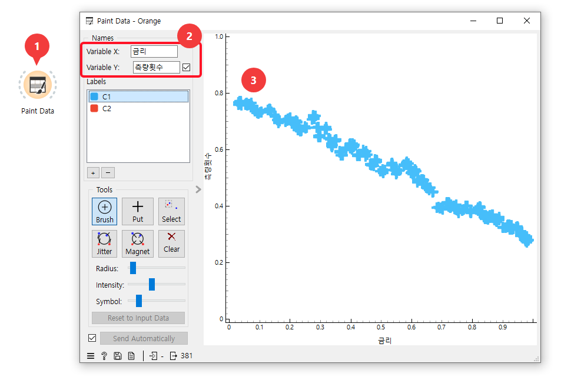
-
Data에서 “Paint Data” 위젯을 추가하고 더블클릭한다.
-
X를 “금리”, Y를 “측량횟수“로 바꾼다.
-
마우스를 이용해 우하향의 데이터 그래프를 그린다.
데이터 값 조정
Paint Data 위젯은 x축과 y축이 모두 0 ~ 1.0 사이의 값을 갖도록 되어 있다.
우리의 데이터 자체가 가상의 데이터이긴 하지만 현실감을 주기 위해,
X축은 금리이니 0 ~ 1 사이의 값이 1.0 ~ 3.0 사이의 값을 갖도록 조정하고,
Y축은 측량횟수이니 0 ~ 1 사이의 값이 100 ~ 500 사이의 값을 갖도록 조정하자.
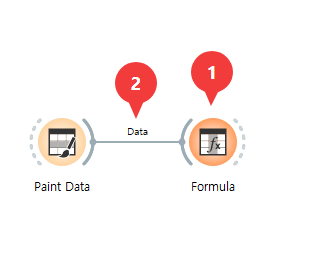
-
Transform에서 “Formula” 위젯을 추가한다.
-
“Paint Data” 노드와 “Formula” 노드를 연결한다.
Formula 설정 창에서 X축과 Y축의 값을 조정한다.
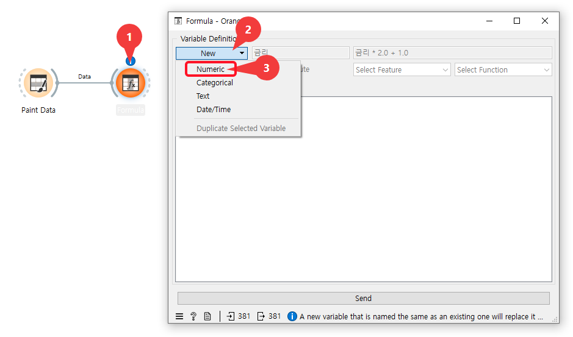
-
“Formula” 노드를 더블클릭한다.
-
Formula 창의 메뉴에서 “New“를 누른다.
-
데이터가 숫자였으니 Numeric 을 선택한다.
“금리” 필드 값 조정
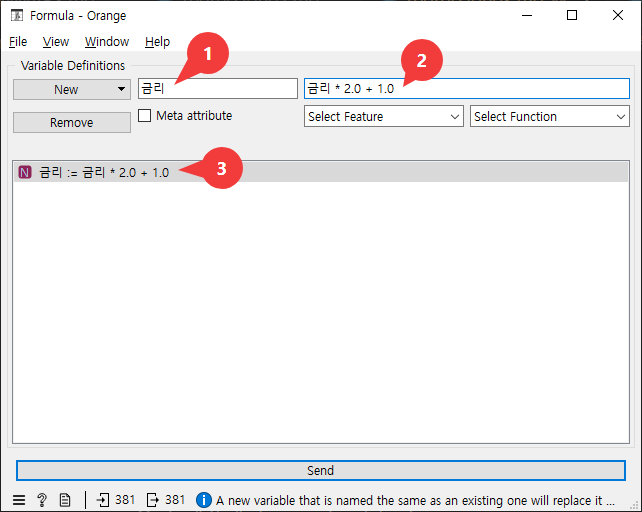
-
우리가 만든 “금리”, “측량횟수” 필드 중 먼저 “금리” 필드의 값을 조정하기 위해 “금리“를 입력한다.
-
“금리” 필드의 0 ~ 1 사이의 값을 1 ~ 3 으로 조정하기 위해, “금리 * 2.0 + 1.0” 을 입력한다.
-
금리를 조정하는 수식이 완성된 것을 확인한다.
금리 := 금리 * 2.0 + 1.0
“측량횟수” 필드 값 조정
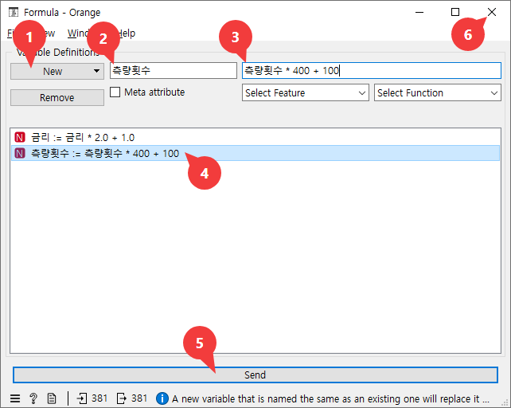
-
“New” 버튼을 누르고 “Numeric“을 선택한다.
-
“측량횟수” 필드의 값을 조정하기 위해 “측량횟수“를 입력한다.
-
“측량횟수” 필드의 0 ~ 1 사이의 값을 100 ~ 500 으로 조정하기 위해, “측량횟수 * 400 + 100” 을 입력한다.
-
측량횟수를 조정하는 수식이 완성된 것을 확인한다.
-
“Send” 버튼을 누른다.
-
닫기 버튼을 누른다.
측량횟수 := 측량횟수 * 400 + 100
조정된 데이터 확인
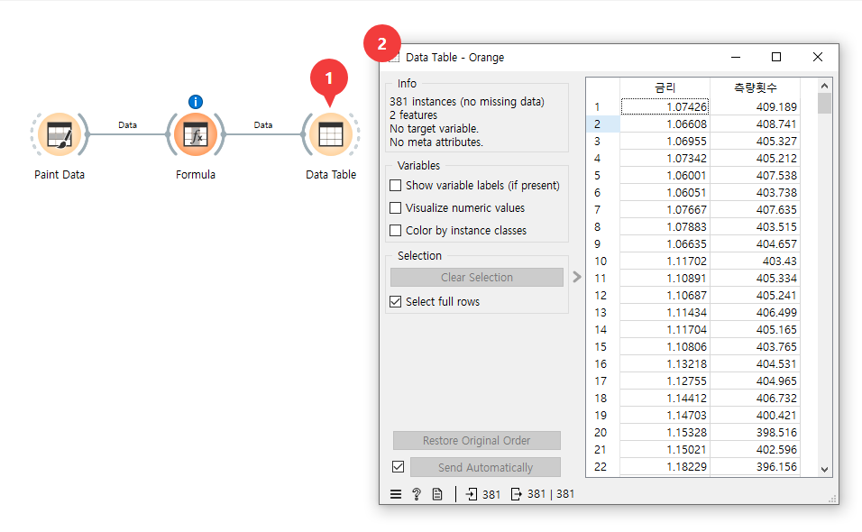
-
Data 에서 “Data Table” 위젯을 추가한다. 그리고 “Formula” 노드와 “Data Table” 노드를 연결한다. 그리고 “Data Table” 노드를 더블클릭한다.
-
Data Table 창이 나타나고 기존에 0~1 사이에만 있던 값들이 금리는 1.0 ~ 3.0, 측량횟수는 100 ~ 500 사이인 것을 확인할 수 있다.
feature와 target 정리
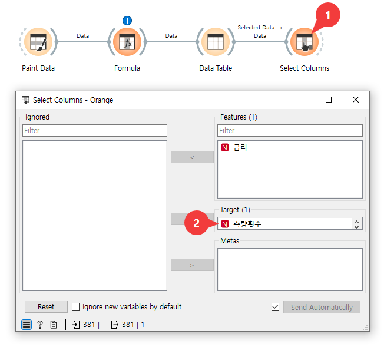
-
Transform에서 “Select Columns” 위젯을 추가한다. “Data Table” 위젯과 연결한다. “Select Columns” 위젯을 더블클릭한다.
-
Feature에 있던 “측량횟수“를 마우스로 끌어내려 Target에 붙인다.
이제 금리는 feature = 독립변수가 되었고,
측량횟수는 target = 종속변수가 되었다.
데이터 시각화
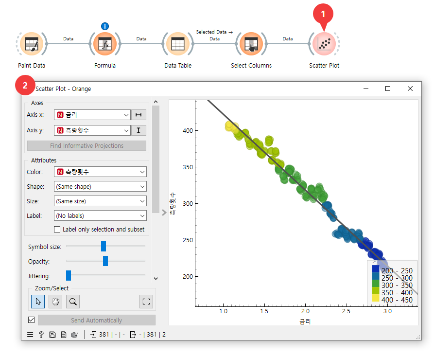
-
Visualize 에서 “Scatter Plot” 위젯을 추가한다. “Select Columns” 노드와 연결한다. “Scatter Plot” 노드를 더블클릭한다.
-
Scatter Plot를 보며 대략적인 금리와 측량횟수 간의 관계를 확인한다.
확인이 끝나면 Scatter Plot는 삭제한다.
Decision Tree 모델 추가
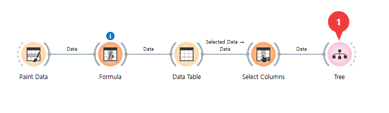
- Model 에서 “Tree” 위젯을 추가한다. 그리고 “Select Columns” 노드와 연결한다.
Decision Tree 모델 성능 테스트
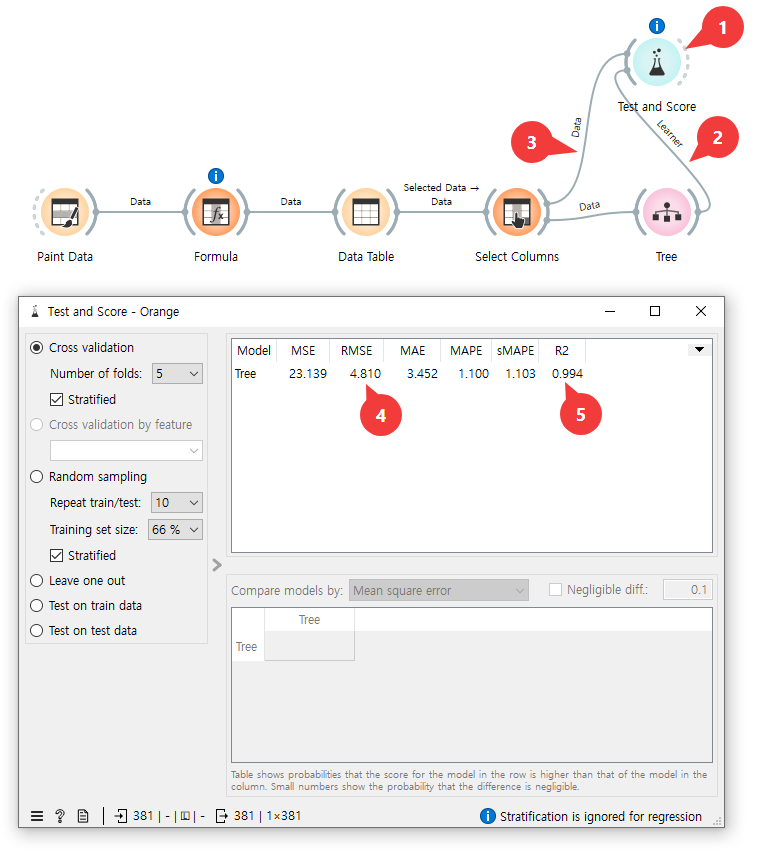
-
Evaluate 에서 “Test and Score” 위젯을 추가한다.
-
“Tree” 노드와 “Test and Score” 위젯을 연결한다. 이 때 선에 “Learner” 라고 적혀 있어야 한다.
-
“Select Columns” 노드와 “Test and Score” 위젯을 연결한다. 이 때 선에 “Data” 라고 적혀 있어야 한다.
-
“Test and Score” 위젯을 더블클릭한 다음, “RMSE” 항목을 확인한다.
-
Test and Score 창에서 “R2” 항목을 확인한다.
Decision Tree 성능 조정
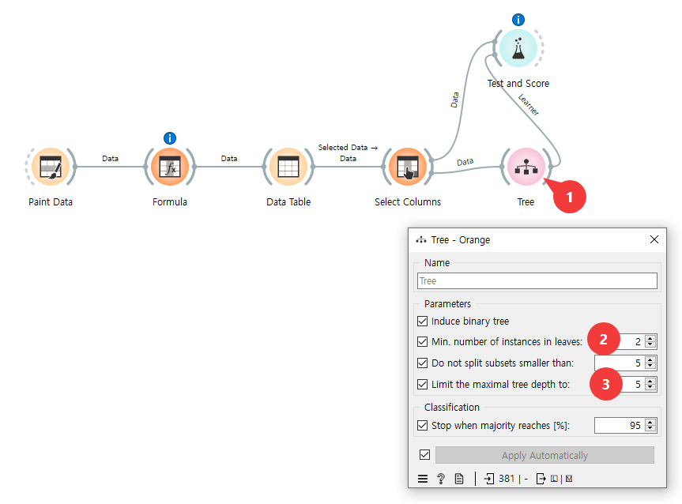
-
“Tree” 노드를 더블클릭한다.
-
“Tree” 노드의 성능을 조정하기 위한 값의 기본값이 다음과 같았음을 확인한다.
- “Limit the maximal tree depth to” : 5
위와 같은 설정일 때 R2의 값이 0.994였음을 알 수 있다.
“Tree” 모델의 Depth 줄이기
Decesion Tree 모델의 depth는 이 모델이 몇 단계나 깊이 들어가며 계속 가지를 쳐 나갈건지에 대한 옵션값이다.
Depth를 줄이면 세밀하게 정리하는 단계가 줄어들어 정확도가 떨어진다.
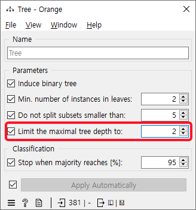
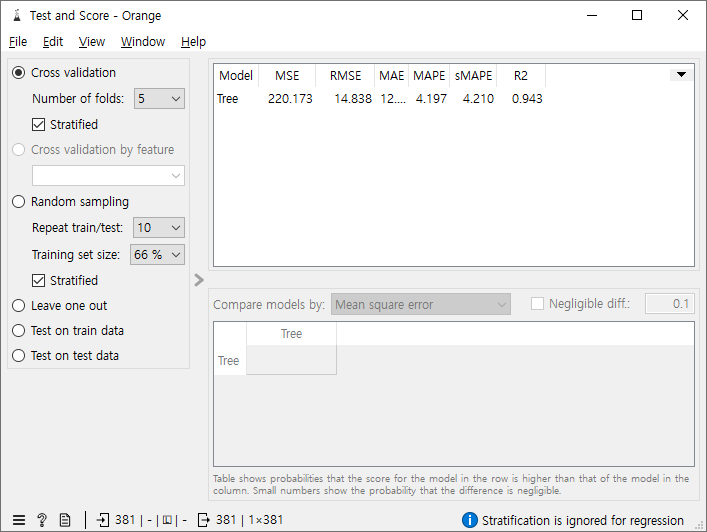
R2의 값이 depth가 기본값인 5일때는 0.994였는데, 2로 줄이니 0.943으로 떨어진 것을 확인할 수 있다.
“Tree” 모델의 Depth 늘리기
depth를 늘리면 더 많은 가지를 치며 세밀하게 정리해 정확도가 높아지지만 너무 높이면 과적합이 될 수 있다.
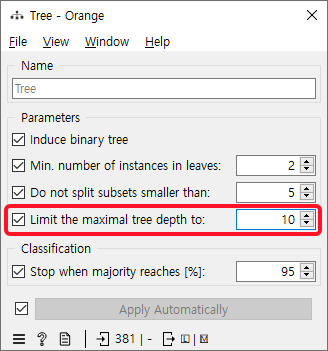
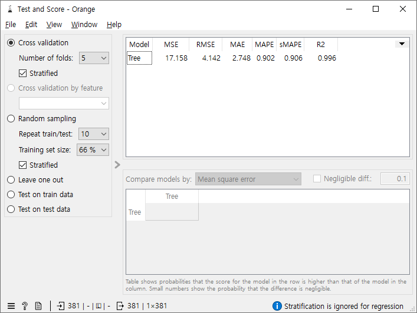
depth를 10으로 올리니 R2의 값이 0.996으로 depth=5일 때(0.994)보다 높아진 것을 볼 수 있다.